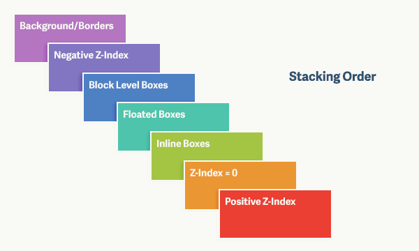
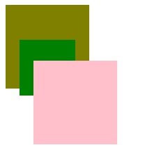
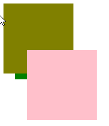
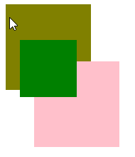
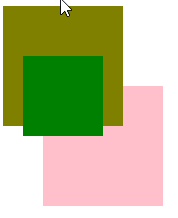

CSS为盒模型的布局提供了三种不同的定位方案：
-
常规文档流
-
浮动
-
绝对定位
其中最后一种定位方案将一个元素从常规流中移除，完全依赖开发者来确定元素显示的位置。通过赋予top, left, bottom 和 right 属性值，可以在二维平面上放置元素，此外CSS也允许使用z-index属性以在第三维上放置元素。
概念
表面上，z-index看起来像是一个简单的属性。 你可以设置各种值来决定某一个元素会被置于第三维的何处，然后就完成了。 实际上，这其中还有许多许多可以研究的内容，包括确定哪一类元素会被放置到其他元素上的一些规则。
由于屏幕是一个二维平面，因此我们并不是真正地看到了z轴。 我们说看到z轴，其实是通过透视，通过元素展现在与其共享二维空间的其他元素的前面或者后面来看到的。
要确定沿着这z轴元素是如何分布的，CSS允许我们对z-index属性设置三种值：
-
auto (自动，默认值)
-
整数（可以是正值，负值，或0）
-
inherit (继承)
目前，先让我们关注在整数值上。 整数值。数值越大，元素也就越靠近观察者。 数值越小，元素看起来也就越远。
疑惑
我想上面的逻辑非常易于理解，而且很有可能和你的预期是一致的。 尽管如此，现在还是有一些问题悬而未决、等待解答。
-
当一个设置了z-index值的定位元素与常规文档流中的元素相互重叠的时候，谁会被置于上方？
-
当定位元素与浮动元素相互重叠的时候，谁会被置于上方？
-
当定位元素被嵌套在其他定位元素中时会发生什么？
要回答这些问题，我们需要进一步地理解z-index是如何工作的，尤其是层叠上下文，层叠层，以及层叠次序这些概念。
层叠上下文和层叠层
想象一张桌子，上面有一堆物品。 这张桌子就代表着一个层叠上下文。 如果在第一张桌子旁还有第二张桌子，那第二张桌子就代表着另一个层叠上下文。同时层叠上下文上还可以有层叠上下文
每一个网页都有一个默认的层叠上下文。 这个层叠上下文（桌子）的根源就是html元素。 html标签中的一切都被置于这个默认的层叠上下文的一个层叠层上（物品放在桌子上）。
当你给一个元素赋予了除 auto (自动) 外的z-index值时，你就创建了一个新的层叠上下文，其中有着独立于页面上其他层叠上下文和层叠层的层叠层。这就相当于你把另一张桌子带到了房间里。
下面是一些规定
-
背景/边框
-
负z-index值 —— 层叠上下文内有着负z-index值的子元素。
-
块级盒 —— 文档流中非行内非定位子元素。
-
浮动盒 —— 非定位浮动元素。
-
行内盒 —— 文档流中行内级别非定位子元素。
-
z-index: 0 —— 定位元素。 这些元素形成了新的层叠上下文。
-
正z-index值 —— 定位元素。 层叠上下文中的最高等级。

demo
<style>
#div1 {
width: 120px;
height: 120px;
background: olive;
position: relative;
}
#div1 div{
width: 80px;
height: 80px;
position: relative;
top: 50px;
left: 20px;
background: green;
}
#div2 {
width: 120px;
height: 120px;
background: pink;
position: relative;
top: -40px;
left: 40px;
}
</style>
<div id="div1">
<div></div>
</div>
<div id="div2"></div>
对于上面的css，都是处于Block Level Box
按照文档的顺序决定层级，效果如下

把#div div的z-index设置值会产生层叠上下文，会与占用统一空间的Block Level Box级别的#div1和#div2比较
为负值

为正值

为#div1设置z-index为z正值时，产产生层叠上下文

为#div1设置z-index为正值，同时#div1 div设置z-index，无论值为该何层叠上下文都会在父层叠上下文上面